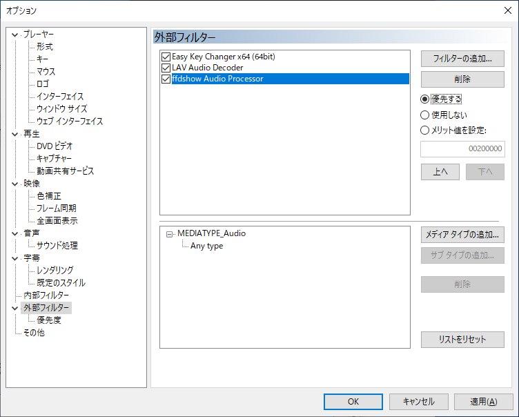
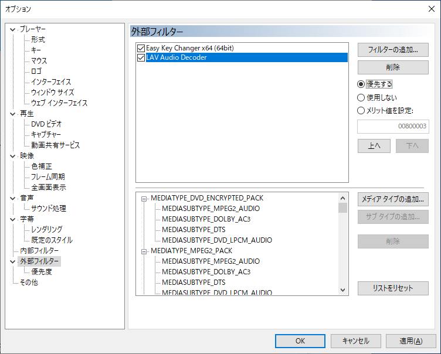
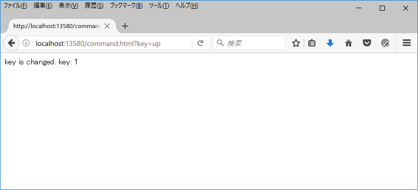

はじめに
簡易キーチェンジャーは、再生中の音声のキー（音程）を、リアルタイムで上下させるための DirectShow フィルターです。イメージとしては、カラオケでキーを上げ下げするのと同様のことができます。
上下させる量などをブラウザで指定できるのが特徴です。
簡易キーチェンジャーは DirectShow フィルターですので、単体では動作しません。DirectShow フィルターを利用できる別のアプリケーション（ホストアプリケーション）と一緒にご利用下さい。
本ヘルプではこれ以降、具体例として、Media Player Classic - BE (MPC-BE) をホストアプリケーションとして利用する場合の説明をします。
縮小されているスクリーンショットは、クリックすると拡大します。
インストール
MPC-BE のインストール
最初に、簡易キーチェンジャーを利用するためのホストアプリケーションとして、MPC-BE をインストールします。
MPC-BE のサイトから MPC-BE をダウンロードします。お使いの Windows 版が 64 ビット版の場合、MPC-BE は 64 ビット版でも 32 ビット版でもどちらでも構いません。お使いの Windows が 32 ビット版の場合、MPC-BE は 32 ビット版をご利用下さい。どちらの MPC-BE を使えばいいか迷った場合は、32 ビット版を使えば大丈夫です。
MPC-BE のダウンロードファイル名に「x64」が含まれているものが 64 ビット版、「x86」が含まれているものが 32 ビット版です。
MPC-BE サイトの説明に従って、MPC-BE をインストールします。デフォルトの設定で問題ないと思います。
ffdshow のインストール
簡易キーチェンジャーは、AAC などのエンコードされた音声を直接扱うことができません。予め、別の DirectShow フィルターで音声処理する必要があります。
音声処理として、本ヘルプでは ffdshow を利用します。
ffdshow は ffdshow tryouts に含まれています。
ffdshow tryouts のダウンロードページから、ffdshow をダウンロードします。MPC-BE が 64 ビット版なら ffdshow も 64 ビット版、MPC-BE が 32 ビット版なら ffdshow も 32 ビット版をダウンロードして下さい。Windows のビット数ではなく、MPC-BE のビット数に合わせて下さい。
ffdshow tryouts サイトの説明に従って、ffdshow をインストールします。デフォルトの設定で問題ないと思います。
簡易キーチェンジャーのインストール
簡易キーチェンジャーは、ダウンロードした zip ファイルを好きな場所に解凍するだけで大丈夫です。
MPC-BE の設定
MPC-BE を起動し、メニューの［表示→オプション］でオプションウィンドウを開きます。
メニューバーが表示されていない場合は、MPC-BE のウィンドウを右クリックして表示されるコンテキストメニューから［オプション］を選びます。
キーボードの O（オー）を押してもオプションウィンドウが開きます。
オプションウィンドウ左側の「外部フィルター」をクリックすると、右の画面になります。
「フィルターの追加」ボタンをクリックすると、右の画面のように、利用可能なフィルターの一覧が出てきますので、「ffdshow Audio Processor」を選択して OK します（名前が似ている ffdshow Audio Decoder ではありませんので注意して下さい）。

すると、外部フィルターに「ffdshow Audio Processor」が表示されるので、それを選択した状態で右の「優先する」のチェックを入れておきます。
また、「ffdshow Audio Processor」をダブルクリックすると、ffdshow Audio Processor の設定画面が開きますので、左側のリストから「Output」を選択します。
「Output format for uncompressed or decoded streams」の欄が、「16-bit integer」のみチェックされている状態になっているか確認してください（恐らくデフォルトではそうなっているはずです）。もし、「16-bit integer」以外にチェックが入っていたら外して下さい。
確認したら、OK ボタンをクリックして ffdshow Audio Processor の設定画面を閉じます。
次に、MPC-BE オプションウィンドウの「外部フィルター」で、もう 1 度「フィルターの追加」ボタンをクリックします。利用可能なフィルターの一覧が出てきますが、今度は「参照」ボタンをクリックします。
開くウィンドウで、簡易キーチェンジャーを解凍したフォルダのサブフォルダにある EasyKeyChanger.dll を選択します。使用している MPC-BE が 32 ビット版の場合は「32bit」サブフォルダにある EasyKeyChanger.dll、MPC-BE が 64 ビット版の場合は「64bit」サブフォルダにある EasyKeyChanger.dll を選択します。Windows のビット数ではなく、MPC-BE のビット数に合わせて下さい。
EasyKeyChanger.dll を選択後、開くボタンをクリックします。
すると、外部フィルターに「Easy Key Changer x86 (32bit)」（または「Easy Key Changer x64 (64bit)」）が表示されるので、それを選択した状態で右の「優先する」のチェックを入れておきます。
必ず、ffdshow Audio Processor の下に 簡易キーチェンジャー が来るようにします。
次に、オプションウィンドウ左側の「内部フィルター」をクリックし、「音声デコーダー」タブを開きます。
様々なフィルターがチェックされているリストボックス内で右クリックし、「全てのフィルターを無効化」をクリックします。
すべてのチェックが外れます。
次に、オプションウィンドウ左側の「音声」をクリックします。
音声レンダラーを「システムデフォルト」にします。
オプションウィンドウの OK ボタンをクリックすれば、設定完了です。
追加の MPC-BE の設定（一部環境のみ）
さきほどまでの設定で、通常は 簡易キーチェンジャー が使えるようになります。しかし、一部の環境では、さらに追加で設定が必要となる場合があるようです。例えば、CPU が Atom 系列のパソコンをお使いの場合、追加設定が必要となる場合が多いようです。
次章「使い方」の通りにしてもうまく動かない場合（音声がプチプチする場合等）は、本節の追加設定を試してみてください。
さきほどまでの設定でうまく動かない場合は、MPC-BE で動画や音声を再生中に、メニューの［再生→フィルター］で表示されるフィルターの一覧に「ffdshow Audio Decoder」が表示されているようです。
そのような場合は、LAV フィルターをインストールし、追加で MPC-BE の設定を行います。
LAV フィルターのインストール
LAV フィルターのサイトから LAV フィルターをダウンロードします。使用している MPC-BE が 32 ビット版の場合は「x86」の zip ファイル、MPC-BE が 64 ビット版の場合は「x64」の zip ファイルをダウンロードします。Windows のビット数ではなく、MPC-BE のビット数に合わせて下さい。
 ダウンロードした zip ファイルを任意のフォルダーに解凍し、中にある「install_audio.bat」を右クリックして管理者として実行します。「LAVAudio.ax の DllRegisterServer は成功しました。」と表示されればインストール成功です。
ダウンロードした zip ファイルを任意のフォルダーに解凍し、中にある「install_audio.bat」を右クリックして管理者として実行します。「LAVAudio.ax の DllRegisterServer は成功しました。」と表示されればインストール成功です。
MPC-BE に LAV フィルターを追加

MPC-BE を起動し、メニューの［表示→オプション］でオプションウィンドウを開きます。
オプションウィンドウ左側の「外部フィルター」をクリックし、「フィルターの追加」ボタンをクリックして、「LAV Audio Decoder」を追加します。
「LAV Audio Decoder」が選択された状態で右の「優先する」のチェックを入れておきます。また、「上へ」ボタンをクリックし、「ffdshow Audio Processor」と「Easy Key Changer」の間に「LAV Audio Decoder」が入る順番にします。
オプションウィンドウの OK ボタンをクリックすれば、追加設定完了です。
使い方
コントローラー
簡易キーチェンジャーを使うには、次の「コントローラー」ページで使うのが簡単です。
MPC-BE で音楽やビデオを「再生している間」に、コントローラーページで操作して下さい。
コントローラーを使わずに、「Web ブラウザー」（Firefox など）の URL 入力欄にコマンドを入れて操作することもできます。
次節以降で、その方法を説明します。
キー変更

例えば、キーを 1（半音）上げるには、Web ブラウザーのアドレスバー（URL 入力欄）に、
http://localhost:13580/command.html?key=up
と入力して Enter キーを押します。
すると、ブラウザに「key is changed. key: 1」のように表示され、キーが 1 上がります。
このように、「http://localhost:13580/command.html?」の後ろにコマンドを入れることで、操作が可能です。
キー変更のコマンドは以下です。コマンドは、半角小文字で入れて下さい。
| 目的 | コマンド | 補足 |
|---|---|---|
| キー上げ | key=up | キーを 1（半音）上げます。1 オクターブ（12）まで上げられます。 例）http://localhost:13580/command.html?key=up |
| キー下げ | key=down | キーを 1（半音）下げます。1 オクターブ（-12）まで下げられます。 例）http://localhost:13580/command.html?key=down |
| キー指定 | key=n（数値） | 上げ下げするキーの量を直接指定します。-12≦n≦12 の範囲で指定できます。0 を指定すると原曲キーに戻ります。 例）http://localhost:13580/command.html?key=-2 |
なお、曲が変わる度に、キー変更設定はリセットされます（原曲キーに戻ります）。
その他
キー変更以外のコマンドは以下です。コマンドは、半角小文字で入れて下さい。
| 目的 | コマンド | 補足 |
|---|---|---|
| バージョン情報 | help=ver | ブラウザにバージョン情報を表示します。 例）http://localhost:13580/command.html?help=ver |
連続操作防止
簡易キーチェンジャーには、誤って同じコマンドを連続してしまうことを防止する機能があります。
コマンドを送る際、token コマンドを併用することで、連続操作を防止できます。
| 目的 | コマンド | 補足 |
|---|---|---|
| 連続操作防止 | token=s（文字列） | 他のコマンドの後ろに token コマンドを付けた場合、前回の token 文字列と異なる token 文字列の場合のみ、コマンドを受け付けます。 例えば、最初に token=a を付加してキー上げした場合、キー上げが行われますが、再度 token=a を付加してキー上げしても、次はキー上げが行われません。次にキー上げをしたい場合は、token=b など、別の token 文字列を付加することにより、再度キー上げが行われます。 例）http://localhost:13580/command.html?key=up&token=a |
音声処理パラメーター変更
キー変更時の音声処理に用いるパラメーターを変更します。通常はこのコマンドは使わないで下さい。不適切な値を設定すると、動作がおかしくなる場合があります。
| 目的 | コマンド | 補足 |
|---|---|---|
| クロスフェード幅変更 | cross=n（数値） | クロスフェード幅を変更します。単位はミリ秒です。キーが変更されるとデフォルト値に戻ります。 例）http://localhost:13580/command.html?cross=10 |
| 切り出し幅変更 | cut=n（数値） | 切り出し幅を変更します。単位はミリ秒です。キーが変更されるとデフォルト値に戻ります。 例）http://localhost:13580/command.html?cut=60 |
仕様
これまでの説明と重複する事柄もありますが、簡易キーチェンジャーの仕様をここにまとめておきます。
動作環境
簡易キーチェンジャー公式ページのサポート情報をご覧ください。
入力音声形式
ffdshow Audio Processor などで処理された後の音声形式が、以下であれば簡易キーチェンジャーでキー変更できます。
| 形式 | リニア PCM |
|---|---|
| サンプリングレート | 任意（44.1 kHz など） |
| ビット深度 | 16 bit |
| チャンネル数 | ステレオ（2ch） |
困ったときは
簡易キーチェンジャーのサポートページをご覧ください。
その他
データベース
| 種類別 | フリーソフトウェア |
|---|---|
| 名称 | DirectShow フィルター |
| ソフトウェア名 | 簡易キーチェンジャー |
| ダウンロード | http://shinta.coresv.com/soft/EasyKeyChanger_JPN.html#Download（メイン） http://shinta0806be.ldblog.jp/archives/9212448.html（バックアップ） |
| 作者 | SHINTA |
| 作者 E メール |  |
| 製品番号 | SHWI-040-A |
ライセンス
簡易キーチェンジャーには以下のライセンスが適用されます。
※第三者から提供されている部分を除きます。第三者から提供されている部分については、元のライセンスに従います。
※営利目的で使用したい場合は、個別に応じられる場合がありますので事前にご相談下さい。
改訂履歴
簡易キーチェンジャーの改訂履歴は以下をご覧ください。